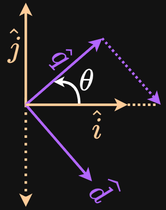
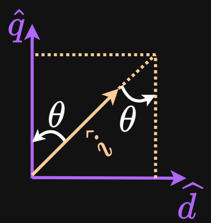

$\ddot{x}\,\hat{i}$ can be split into $\ddot{x}\,cos\theta\,\hat{q}$ and $\ddot{x}\,sin\theta\,\hat{d}$.
Consider the basis vectors $\hat{q}, \hat{d}$ that are rotated w.r.t. $\hat{j}, \hat{i}$ as shown in the figure. The aim is to express $\hat{i}$ in the rotated coordinate system.
Derivation

Changing the basis, i.e. expressing the unit vector $\hat{i}$ as a linear combination of the rotated basis vectors:
$$
\hat{i} = cos\theta \,\hat{q} + sin\theta \,\hat{d}
$$
Multiplying both sides by $\ddot{x}$ yields the decomposed components along the rotated axes:
$$
\ddot{x}\,\hat{i} = \ddot{x}\,cos\theta \,\hat{q} + \ddot{x}\,sin\theta \,\hat{d}
$$
Why a dot or cross product is not needed here?
The target vector $\ddot{x}\hat{i}$ is already aligned with a basis vector $\hat{i}$.
The angle between the new basis vectors and the target vector is known.
Cross or dot product is generally used to compute projections or orthogonal components in general 3D space. In this case, the decomposition is geometrically simple as it's equivalent to projecting a vector that lies along the x-axis onto a rotated coordinate system.